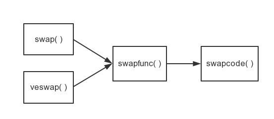
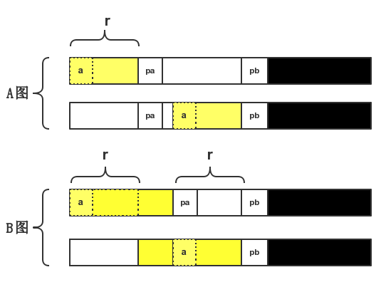
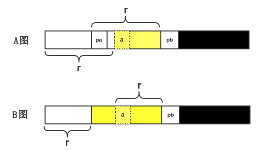

详解Redis源码中的部分快速排序算法（pqsort.c）
转载自果冻虾仁 2015-06-07 19:08:39
看标题，你可能会疑惑：咦？你这家伙，怎么不讲解完整的快排，只讲一部分快排……-。- 哎，冤枉。“部分快排”是算法的名字，实际上本文相当详细呢。本文几乎与普通快排无异。看懂了本文，你对普通的快排也会有更深的认识了。
快速排序算法（qsort）的原理我们大都应该了解。本文介绍的是部分快速排序算法。其实其算法本质是一样的，只不过限定了排序的左右区间，也就是只对一个数字序列的一部分进行排序，故称为“部分快速排序算法”，简称：
pqsort
Redis项目中的pqsort.c 文件实现了pqsort()函数，其源码见本文最后一节 pqsort.c源码 。 另外补充一句：长文慎入 :-)
导读
外部资料http://zh.wikipedia.org/wiki/快速排序)
论文
实际上pqsort.c的快排流程是改编自一个经典实现，该实现被许多库的实现所使用。请参考Bentley & McIlroy所著论文 “Engineering a Sort Function”
源码结构
| 主要函数 | pqsort() |
|---|---|
| 静态函数 | _pqsort()、swapfuc()、med3() |
| 宏函数 | min()、swap()、swapcode()、vecswap()、SWAPINIT() |
总体来说，pqsort.c文件对外只提供了一个函数—— pqsort() ，但它的算法逻辑其实是由_pqsort()实现的，其他的静态（static）函数和宏也都是为了该函数服务的。
接下来的介绍中，我会简单介绍宏函数和几个静态函数，把重点放在静态函数_pqsort()上。它才是整个算法的核心部分。
pqsort()与qsort()
C标准库中有一个快排的函数qsort()，它与本文介绍的pqsort()所提供的编程接口极为相似，请看两者声明：
1 | void qsort (void *a, size_t n, size_t es, int (*cmp)(const void *, const void *)); |
参数解读
| 参数 | 说明 |
|---|---|
| a | 待排序数组的首地址 |
| n | 待排序元素的个数 |
| es | element size：每个元素的字节大小 |
| cmp | 回调函数，定义了比较的规则，直接影响排序结果是递增排序或递减排序，并支持非标准类型的排序 |
| lrange | 待排序的左边界 |
| rrange | 待排序的右边界 |
pqsort()与_pqsort()
pqsort()源码
1 | void |
可以看出我们的qpsort()其实是在调用_pqsort()来完成排序功能的。这两个函数很像，差别在于参数上。
看一下两者的函数原型：
1 | void |
差异的关键在于：
- pqsort() 的参数中的左右边界值，其含义值下标
- _pqsort()的参数中的左右边界值，其含义是指针
这样pqsort()源码就不足为奇了。所以我前面说该文件的核心部分是_pqsort()
预备知识
看一下除了_pqsort()之外的源码部分，这些都是_pqsort()函数实现的辅助。
med3
1 | static inline char * |
根据回调函数cmp指定的比较规则，则求出变量a，b，c中处于中间大小的变量。换句话说：就是在求 中位数。
min
1 |
这是个简单的宏，看一眼就呵呵就行了。
SWAPINIT
1 |
|
该宏的目的在于，给swaptype赋值，它有如下几种取值：
| swaptype | 说明 |
|---|---|
| 0 | 数组a中每个元素的大小是sizeof(long) |
| 1 | 数组a中每个元素的大小是sizeof(long)的倍数，但不等于sizeof(long) |
| 2 | 数组a中每个元素的大小不是sizeof(long)的倍数 |
| 其他 | 数组a的首地址不是sizeof(long)的倍数，即不是总线字节对齐 |
swaptype等于0、1、2的时候，数组a的首地址都是sizeof(long)字节对齐的。
题外话：
我们常说8字节对齐，指的是64位机器中要满足8字节对齐（首地址是8的倍数），则数据的读取效率会更高。而32位系统应满足的是4字节对齐。具体大小是和机器字长相关的，机器字长指的是计算机一次能读取的二进制位数。一般机器字长和long类型的大小相同，所以可以说要满足sizeof(long)字节对齐。
下面首先介绍的是几个与交换操作相关的函数（或宏），这里我假定A → B表示A函数会调用B函数（宏）。

我们从右向左解读
swapcode
这是个宏函数 。其功能是将以parmi和parmj为首地址的n个字节进行交换。
1 |
- 形参
TYPE就是指的类型，阅读后面代码，可知其实参是char和long这两种。 - 形参
n指定的是待交换字节数。
请允许我在宏这里，使用了术语：形参、实参。虽然可能不搭，但目的是便于读者理解。
1 | size_t i = (n) / sizeof (TYPE); \ |
i就是指定类型（char或long）的元素的个数。然后将参数parmi和parmj转换成指定的类型的指针pi和pj。
1 | do { \ |
一个do-while循环，内部执行了交换操作。
swapfunc
1 | static inline void |
简单的if条件语句。如果swaptype <= 1（swaptype为0或1，即元素类型为sizeof(long)的倍数）则按long类型的大小来进行交换。否则就按char类型的大小来进行交换。
这样做的目的主要是提高交互操作的效率。
swap
1 |
|
前面已经说过了，swaptype为0的时候，表示数组元素的大小等于long类型的大小。所以这里进行了这样的交互操作。
vecswap
1 |
该宏和swap(a, b)其实很像，都是在调用swapfunc来完成交互操作。但而二者的不同之处是：vecswap(a, b, n)进行的是n*2个元素的交换，而swap(a, b)仅仅进行两个元素之间的交换。
vecswap是vector swap的缩写。vector即向量，表示多个元素
好了，言归正传，前面说了这么多，其实都是基础先修课，接下来才是真正的核心代码呦。
_pqsort
回顾一下声明部分：
1 | static void |
因为a是带排序数字序列的首地址，所以我下面希望能用数组的写法来简化我的描述。
比如&a[1] = (char *) a + es，&a[n-1] = (char *) a + (n-1)*es
等号右边的表达式是void *实现C语言泛型功能的典型方法。
诚然，在语法上，二者并非等价的，但在逻辑上是可以理解的。仅仅是为了便于理解，简化叙述
cmp前面我也提到了是一个回调函数，实现了自定义的比较操作。这里为了简化叙述，我们假定要完成的就是一个递增序列，而cmp完成的就是一般的大小比较操作。
同样为了便于表述，我们假定我们要完成的是数字的排序工作，而不是其他自定义类型的排序工作。
局部变量
1 | char *pa, *pb, *pc, *pd, *pl, *pm, *pn; |
loop循环
1 | loop: SWAPINIT(a, es);1 |
这一行使用SWAPINIT宏函数，求解出了swapcode的值。行首有一label（标签）——loop：说明接下来会有一个goto的循环语句。
读者朋友请不要在这里跟我纠结方法论中的论调，我只想说： goto 有时候确实是很方便的，可读性也不错。
每循环一次完成的是快排的一趟排序工作。
一段插入排序
1 | if (n < 7) { |
这段代码，如果你使用了我前面简化的数组表示法来代换的话，实际上不难理解。 在带排序元素个数小于7的时候，我们采用 插入排序 。
在元素个数不多的时候，使用快排反而不能提高效率，倒不如传统的冒泡来的实在。
然而到底这个数为什么是7，而不是6，8或其他数字，我也不得而知。我只能说这就是一个
Magic Number（中文译为魔数、幻数。指代码中出现的不明所以，意义不明的数字）。
选取模糊中位数
1 | pm = (char *) a + (n / 2) * es; |
首先是pm = &a[n/2]，在n大于7的时候， pl =&a[0]; pn = &a[n-1]; 然后在元素个数n大于40的时候：
没错，为什么是40。这又是一个
Magic Number
重新选择新的pl，pm，pr。d = (n / 8) * es;我们可以假想将n个数字分成8个子区间。
pl是左边三个区间首部中的中位数索引（首部指的是子区间第0个元素）
pm是中间三个区间首部中的中位数索引
pr是右边三个区间首部中的中位数索引
接着一个
pm = med3(pl, pm, pn, cmp);在这三个中位数中选取中位数。所以最后我们得到的pm实际上是比较接近于整个数字序列中位数的索引。当然并不是所有数字中的中位数。我们可称它为模糊中位数。了解快排的过程，我们就会知道每趟排序之前选取一个元素作为基准，排序之后保证该基准左边都小于它，基准的右边都大于它。然后该基准的左右区间在重复这一排序过程。如果我们每趟选取的基准都接近中位数，保证左右区间的长度大致相同。那么接下来排序的效率就更高。
1 | swap(a, pm); |
将pm的的值与a[0]的值交互。我们的模糊中位数此时保存在了第一个元素中，接下来我称它为基准。
然后：pa = pb = a[1]; pc = pd = a[n-1];
一趟排序
1 | for (;;) { |
一个两层循环。涉及代码量较多，这里我简单地介绍一下它的功能，大家努力去自行理解。好吧，其实是我说累了，懒得说了。它的功能是基本完成了快排中的一趟排序。唯一的不足之处就是我们的基准还不在中间位置。此外该操作还把序列中和基准a[0]相同的数都交换到了序列的左端和右端的连续区间。
所以接下来我们要把基准区间都交换到中间位置才行。
把基准交换到中间
1 | pn = (char *) a + n * es; //pn = a[n]...不要担心越界，下面并不会访问该内存 |
这部分代码就是把数字序列左右两端的连续区间（值等于基准）都交换到序列的中间。之所以调用min()来确定交换的个数r，是因为交换前后两个区间是可能有重合的，所以我们要保证交换的元素个数最少。以左端的交换为例（黄颜色的部分表示值都等于基准a[0]）：
- A图表示pa - (char *) a < pb - pa
- B图表示pa - (char *) a > pb - pa

到此为止，我们一趟排序工作完成了，接下来要做的就是用递归或循环来开始下一趟排序。
开始下一趟排序
简单地描述一下快排过程，在一趟快排结束后。我们要用递归（或循环迭代）的方式在重复排序工作。此后就是在基准左边这一区间展开一趟排序，在基准右边区间也展开一趟排序。这就是分治思想。
1 | if ((r = pb - pa) > es) { |
这段代码是对基准左边的区间进行一趟递归的快排。注意，最外层的if条件中对r进行了重新赋值(r = pb - pa)。 判断pb - pa这一个区间元素个数是否大于1（只有一个元素显然不需要排序的）。为什么是判断pb - pa而不是判断pa - a呢？直接上图（与前文中的AB两种情况对应）：

黄色左边的白色部分，是我们要排序的区间
接着看代码，内层也嵌套了一个if，他的条件很复杂。肢解一下，这个条件有一个！非操作。我设该条件为!T，用伪码表示：
1 | // T = ((lrange < _l && rrange < _l)||(lrange > _r && rrange > _r)) |
去理解它的逆命题（else）: 如果满足条件T，则不会进行排序。其实很好理解，lrange，rragne是待排序的区间左右边界，而_l和_r是基准左侧区间的实际左右边界。如果待排序的边界比实际左边界还要小，或者比实际的右边界还要大，显然是不满足条件的。
实际上在整个pqsort.c源码中，所做的操作几乎于普通的快排无异，唯一体现了部分快排算法的部分二字的地方就是这内层嵌套的循环而已。
1 | if ((r = pd - pc) > es) { |
这段代码是对基准右边的区间进行了一次快排。其过程和前面类似，就不赘述了。不同之处是关于首元素索引不再是原先的a，而是pn - r，这并不难理解。另外一个变化就是这一趟新排序的开始不是使用的递归，而是循环（goto loop）。作者在注释中也解释了，没有继续采用递归是为了节省栈空间。
pqsort.c源码
1 |
|